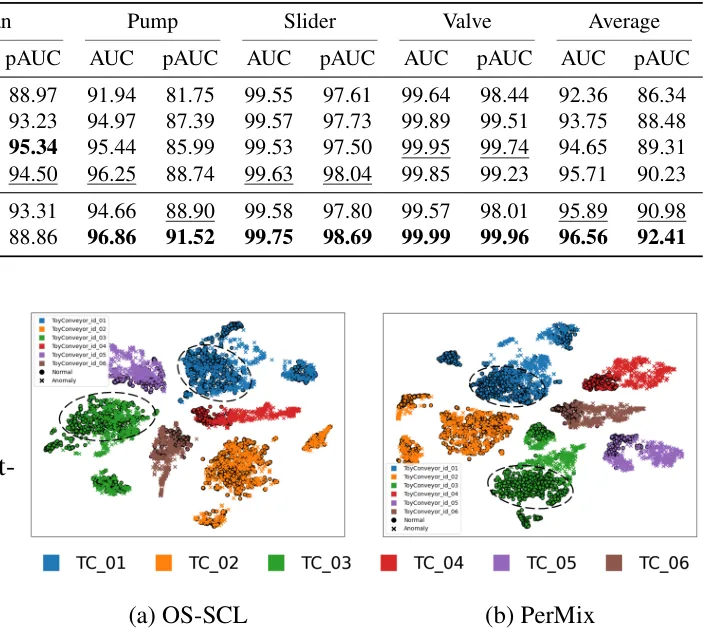

O Problema da Supervisão Mismatched no Mixup
A detecção de sons anômalos (ASD) é fundamental para a manutenção preditiva de máquinas industriais. O desafio central reside na escassez de dados de falhas: é difícil coletar exemplos de todos os tipos possíveis de anomalias. Por isso, o paradigma predominante tornou-se o aprendizado auto-supervisionado, onde o modelo é treinado exclusivamente com dados de operação normal. A ideia é que, ao aprender bem a distribuição de normalidade, qualquer desvio significativo seja identificado como anomalia.
Dentro desse paradigma, as abordagens baseadas em classificação têm se destacado. Elas utilizam tarefas pretextuais, como prever o ID da máquina ou as condições de operação, para extrair representações robustas. Para melhorar a separação entre classes, é comum empregar perdas com margem angular, como ArcFace, que forçam os embeddings de uma mesma classe a serem compactos e distantes de outras classes.
Para aumentar a robustez, técnicas de mixup foram introduzidas. O mixup cria novas amostras de treinamento misturando linearmente dois exemplos originais e suas etiquetas. No contexto de ASD, isso ajuda o modelo a generalizar melhor. No entanto, métodos anteriores como NAMix e OS-SCL apresentam uma falha estrutural crítica: eles rotulam a amostra mista baseada apenas na primeira amostra (âncora), independentemente da proporção com que ela contribui para a mistura.
A Falha da Margem Angular Fixa
Essa abordagem fixa cria um problema de supervisão desalinhada. Se a amostra de origem (a âncora) representa apenas uma pequena fração, digamos 10%, da amostra mista gerada, o modelo ainda recebe a supervisão completa da classe da âncora. Isso é enganoso, pois a amostra mista contém 90% de informação de outra classe. Além disso, a margem angular aplicada pela perda é fixa, punindo igualmente amostras que são quase puras e amostras que são altamente perturbadas por outra classe.
Essa rigidez reduz a sensibilidade do modelo a perturbações sutis. Como a margem é a mesma para todos, o modelo pode não aprender a distinguir adequadamente onde termina a distribuição normal e onde começa o ruído ou a anomalia, especialmente nas bordas das classes. A compactação excessiva das distribuições de classe pode fazer com que pequenas anomalias sejam ignoradas ou classificadas erroneamente como normais, pois o modelo as vê como parte da nuvem de pontos da classe majoritária.
Os autores identificam que a solução não está apenas em adicionar mais complexidade ao modelo, mas em reformular a função de perda para refletir a realidade estatística da amostra mista. Se a amostra é majoritariamente de uma classe, a supervisão deve refletir isso. Se é minoritária, a penalidade deve ser ajustada. É aqui que entra o PerMix.
A Proposta: PerMix e a Razão de Perturbação
O PerMix propõe uma nova tarefa pretextual: em vez de prever a classe da âncora, o modelo deve prever a razão de perturbação da classe dominante na amostra mista. Isso envolve reformular o logit da perda de margem angular. Em vez de uma margem fixa, a penalidade da margem é escalonada pela razão de perturbação. Ou seja, se a amostra mista é muito diferente da classe alvo (alta perturbação), a margem aplicada é menor, evitando que o modelo tente forçar indevidamente essa amostra 'contaminada' para o centro da classe normal.
Essa reformulação permite que o modelo seja mais sensível a desvios. Amostras que estão perto do centro da distribuição normal recebem uma penalidade de margem maior, incentivando a compactação. Amostras que estão longe, seja por serem misturas complexas ou por serem anomalias reais, recebem uma penalidade ajustada, permitindo que elas se afastem do centro sem serem penalizadas excessivamente por não serem 'puras'.
Além da perda de margem adaptativa, o PerMix introduz uma modificação na perda de contraste supervisionado (SCL). Nos métodos anteriores, pares positivos eram formados baseados na âncora, o que causava inconsistência quando a âncora era minoritária. No PerMix, os pares positivos são formados com base na classe dominante da amostra mista. Isso alinha a supervisão com a informação predominante no sinal, resolvendo o problema de mismatch supervisionado.

Detalhes da Implementação e Perdas
A arquitetura do PerMix é flexível e pode ser aplicada a diferentes backbones. Os autores testam com um encoder leve baseado em MobileFaceNet e com o modelo grande BEATs. A geração das amostras mistas envolve perturbar a amostra âncora com R amostras aleatórias, onde R é amostrado uniformemente de {1, 2, 3}. Isso cria uma variedade de níveis de perturbação durante o treinamento.
A perda principal, L_per, é a versão reformulada da margem angular. Ela usa uma margem m = 0.4 e um fator de escala s = 30. A ideia é que o logit seja ajustado de forma que a distância angular efetiva dependa da razão da classe dominante. Se a razão é baixa, a margem efetiva diminui, facilitando a separação de amostras que não se encaixam bem na classe.
A segunda componente é a perda de contraste baseada na dominância, L_dom. Ela força embeddings de amostras que pertencem à mesma classe dominante a serem próximos no espaço latente. Isso complementa a perda de margem, que foca na separação de classes, enquanto o contraste foca na coesão dentro da classe dominante. Juntas, as duas perdas criam uma representação onde as classes normais são compactas e bem separadas, mas com tolerância adaptativa para a variabilidade natural e perturbações.
Avaliação no Benchmark DCASE 2020
Os experimentos foram conduzidos no dataset DCASE 2020 Task 2, um benchmark padrão para ASD. O dataset contém gravações de seis tipos de máquinas, com múltiplos IDs, totalizando 41 classes. A avaliação utiliza AUC (Area Under the Curve) e pAUC (partial AUC), este último focado na região de baixa taxa de falsos positivos, que é crítica em aplicações industriais onde alarmes falsos são custosos.
O PerMix com backbone TFSTgram-MFN alcançou uma média de AUC de 95.89% e pAUC de 90.98%. Com o modelo grande BEATs, os resultados foram ainda mais impressionantes: 96.56% de AUC e 92.41% de pAUC. Esses números superam o estado da arte anterior, TFSTgram (OS-SCL), que obteve 95.71% de AUC e 90.23% de pAUC com o mesmo encoder leve.
A melhoria é particularmente notável em classes desafiadoras, como ToyConveyor, onde o sinal é dominado por ruído de fundo. O PerMix conseguiu um pAUC de 72.99% com o encoder leve e 77.78% com o BEATs, os melhores resultados entre os métodos comparados. Isso sugere que a abordagem é mais robusta a ruídos e consegue aprender uma distribuição normal mais precisa, mesmo em condições adversas.
Análise dos Componentes da Perda
Para entender a contribuição de cada parte do PerMix, os autores realizaram um estudo ablação. Substituir a perda ArcFace padrão pela L_per (margem adaptativa) resultou em uma melhoria substancial no AUC e pAUC para ambos os backbones. Isso confirma que prever a razão de perturbação aumenta a sensibilidade a sinais anômalos sutis.
Adicionar a perda de contraste baseada na dominância (L_dom) à ArcFace não trouxe ganhos significativos. Isso ocorre porque a ArcFace já compacta as distribuições de classe suficientemente, deixando pouco espaço para o contraste melhorar. No entanto, adicionar L_dom à L_per melhorou ambas as métricas, indicando que as duas perdas são complementares.
A L_per empurra as amostras mistas para longe do centro da classe com base na sua razão de perturbação, enquanto a L_dom puxa amostras da mesma classe dominante juntas. Essa combinação cria um espaço de características onde a normalidade é bem definida, mas com fronteiras flexíveis o suficiente para lidar com a variabilidade inerente aos dados de áudio industrial.
Visualização e Interpretação
A visualização t-SNE dos embeddings da classe ToyConveyor usando o modelo BEATs revela a eficácia do PerMix. Com o método anterior OS-SCL, vários exemplos anômalos são mapeados para dentro dos clusters normais, o que explica a dificuldade em detectar essas anomalias. Isso ocorre porque a supervisão fixa não consegue distinguir adequadamente a fronteira entre normal e anômalo nessas condições de ruído.
Em contraste, com o PerMix, os exemplos normais permanecem em clusters compactos e bem separados, e os exemplos anômalos são claramente afastados desses clusters. Essa separação mais nítida é diretamente atribuível à reformulação da margem angular e ao alinhamento da supervisão com a classe dominante. O modelo aprende a representar a 'normalidade' de forma mais precisa, tornando as anomalias mais visíveis no espaço latente.
Limitações e Escopo
É importante notar que o PerMix foi avaliado principalmente no benchmark DCASE 2020 Task 2. Embora os autores também mencionem avaliações no DCASE 2022 Task 2 para testar generalização sob mudança de domínio, os resultados detalhados focam no dataset de 2020. A eficácia do método em outros domínios ou tipos de dados de áudio não industriais não é explorada em profundidade neste artigo.
Além disso, o método depende da qualidade da tarefa pretextual original. Se a classificação das classes normais for ruim, a predição da razão de perturbação pode ser afetada. O PerMix não resolve problemas fundamentais de coleta de dados ou desbalanceamento extremo de classes que não sejam tratados pela própria tarefa de classificação. Ele é uma melhoria na função de perda, não uma solução mágica para todos os problemas de ASD.
Outra consideração é a complexidade computacional. Embora o PerMix possa ser aplicado a backbones leves, o uso de modelos grandes como o BEATs requer recursos significativos para fine-tuning. Os autores utilizam GPUs NVIDIA RTX 4090, o que pode não estar acessível para todos os pesquisadores ou aplicações em tempo real com restrições de hardware.
Conclusão
O PerMix apresenta uma contribuição sólida para a detecção de sons anômalos baseada em aprendizado auto-supervisionado. Ao reformular a tarefa pretextual para prever a razão de perturbação e ajustar a margem angular e o contraste supervisionado de acordo, os autores resolvem problemas de supervisão desalinhada presentes em métodos anteriores.
Os resultados no benchmark DCASE 2020 Task 2 demonstram que essa abordagem é eficaz, superando o estado da arte tanto em backbones leves quanto em modelos grandes. A capacidade de separar melhor anomalias sutis, especialmente em condições de ruído, torna o PerMix uma ferramenta valiosa para manutenção preditiva.
O código-fonte está disponível no GitHub, permitindo que a comunidade valide e estenda o trabalho. Para desenvolvedores e cientistas de dados trabalhando com ASD, o PerMix oferece um caminho claro para melhorar a robustez dos modelos através de uma reformulação cuidadosa da função de perda, em vez de apenas adicionar complexidade arquitetural.
O que fica
- O PerMix resolve o problema de supervisão desalinhada no mixup ao prever a razão de perturbação da classe dominante, ajustando a margem angular de forma adaptativa.
- A perda de contraste supervisionado é modificada para formar pares positivos baseados na classe dominante, melhorando a coesão dos clusters normais.
- O método alcança estado da arte no benchmark DCASE 2020 Task 2, com melhorias significativas em classes ruidosas como ToyConveyor.
- A abordagem é modular e pode ser aplicada a diferentes backbones, desde encoders leves quanto modelos grandes como o BEATs.
Paper original: PerMix: Anomalous sound detection by predicting the perturbation ratio of mixed samples
Comentários
Nenhum comentário ainda. Seja o primeiro.